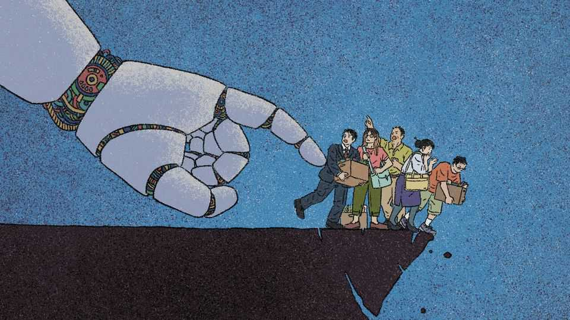
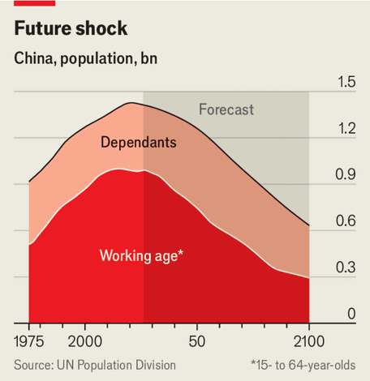
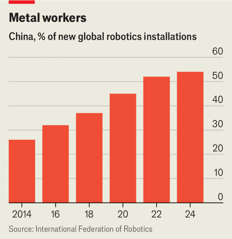
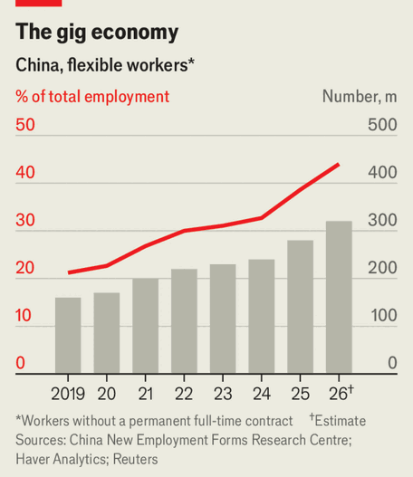

China’s AI drive threatens the world’s largest workforce
Chinese leaders worry about workers being displaced by the tech they are promoting

Aug 6th 2026
Li Dazhi paced back and forth on a set resembling a chief executive’s office as he rehearsed lines in Zhengzhou, a city in central China that has become a hub for microdramas. The serialised minute-long shows have taken over phone screens across the country; one in two people watch them. In 2025 microdramas grew into a 100bn yuan ($15bn) business, having created some 700,000 jobs and perhaps 1.3m indirect ones—a rare bright spot of dynamism in China’s sputtering economy.
The booming industry had given Mr Li, a 32-year-old former traffic cop, a chance to try something new. He had been busy studying eight to 15 fantastical scripts each month. Then in February, ByteDance, a tech giant, launched Seedance 2.0, an artificial-intelligence model that can make impressively realistic videos. It quickly upended the business. Series now take days to produce instead of weeks, and are up to 90% cheaper (the bill is mostly tokens, instead of humans). Mr Li’s daily salary fell by half and gigs dried up. Many of his colleagues switched to selling insurance, setting up vendor stalls, delivering takeaway food or picking up passengers. “Advanced technology can improve people’s quality of life,” he says. “But for our industry, right now it’s doing more harm than good.”
China has made an all-out push in AI, under the conviction that, in its competition with America and the rest of the world, dominance of the technology is an almost existential necessity. The Communist Party also sees a clear long-term need for AI to mitigate eventual labour shortages in a fast-ageing society. To meet that future China is aggressively pursuing AI-integration, especially in the form of “embodied AI”: bringing AI models into the physical world through robots and cars. China’s leaders envision an era to come of “human-machine collaboration”.
But the party is increasingly concerned about how AI will displace workers. Advances in AI threaten both office jobs and blue-collar ones that have been the fallback for millions who have been laid off or paid less in recent years—in a system which lacks a strong safety-net. And, as demonstrated by the stunningly rapid disruption of microdramas, AI has the power to erase jobs in a keystroke. “This transformation involves both job creation and job destruction, yet the two effects are asymmetrical, with job displacement often preceding and surpassing job creation,” Cai Fang, a prominent economist at a top state think-tank, writes in a new book on the labour impact of AI. The government’s task is made harder by a bleak macroeconomic picture, potentially widening the gulf between China’s have-bots and have-nots.
Some Chinese workers are already labouring alongside the technology that will replace them. Consider Jia Cunqi. For decades he clutched the wheel as he drove coal and bulk cargo across China, his back achy and his eyes sore after long stretches on the road. Now the 44-year-old has to move only when merging onto highways or driving short stretches on urban roads. That is because his lorry is equipped with advanced driver-assistance technology that can nearly drive by itself. China’s rules still require a human in the driver’s seat with his hands touching the wheel.
On a recent Monday morning, he picked up your correspondent at a rest stop in Suzhou before his last leg to Shanghai. For most of his career, he sat beside another human driver (to take turns at the wheel). Now he listens to martial-arts novels and video-calls his nine-year-old who marvels at the self-driving lorry. His job is more comfortable, if lonelier. If the lorry masters getting on highways, then it is all set, he says. But humans will still be needed, he argues, rattling off common problems: flat tyres, leaky air pipes, sudden engine-death, navigating around road accidents. By the time lorries go driverless, he thinks he will be retired (drivers often retire by 50 or 55 in China, where they tend to go longer distances with less rest).
Mr Jia is one of 38m lorry drivers who transport more than 70% of the country’s freight. They are ageing and few young people want to replace them. Julian Ma, founder of Inceptio Technology, pitches his driver-assistance tech—found in most of China’s autonomous lorries—as the solution for preventing a labour shortage from derailing the logistics sector, while reducing accidents and saving fuel. Some American states already permit autonomous lorries to run without human drivers, but fewer clock miles there. It is in China where the rubber hits the road. Inceptio has installed 7,000 systems and expects more than 10,000 by this year’s end.
One big logistics firm says 1,000 of its 8,000 lorries are equipped with Inceptio’s technology and all its future lorry purchases would be. The tech allows for 30% fewer drivers and saves 3-4% in transport costs, an executive tells The Economist. That is even before regulators allow lorries to operate without humans.
In July JD.com, one of China’s biggest e-commerce groups, launched a 31km-long fully autonomous lorry delivery-route on the outskirts of Beijing. The pilot permits the lorry to drive itself without human hands on the wheel, so long as a safety driver sits on board. It is the latest move by Liu Qiangdong, JD’s chairman, to automate his vast delivery empire. In October he vowed to buy 3m robots, 1m unmanned vehicles and 100,000 drones over the next five years. “Sooner or later, there simply won’t be a need for delivery couriers,” he said at an event in June. “But we don’t want to see our 700,000 brothers go hungry.”
American bosses are wont to predict an AI jobs apocalypse, but their Chinese counterparts usually avoid the subject for fear of angering the government. Mr Liu took pains to note that he intends to keep his “brothers” employed by training them in robot maintenance (he has partnerships with 124 schools). “We’ll turn blue-collar workers into white-collar ones, letting them sit in an office instead of braving the wind and rain.” But even the retail juggernaut will not need that many technicians.
It is easy to imagine the jobs AI destroys, but harder to imagine the ones it creates. Shen Jianguang, JD’s chief economist, points to China’s $2trn e-commerce industry as an example of how technological advances can give rise to new sectors and previously unimaginable roles.
JD’s workforce, 180,000-strong when he joined eight years ago, has quintupled to 930,000, Mr Shen says. That growth has come while more of their 3,600 warehouses became highly automated and while their operations increasingly integrated AI, from AI livestreamers which hawk products (replacing humans who did the same) to last-mile delivery bots. As JD ventures further into services, which already include car repair and home cleaning, couriers will be able to train for such work as elderly and medical care, Mr Shen says. His optimistic vision dovetails with the government’s goal of improving workers’ skills and expanding services, crucial for boosting both employment and domestic demand.
With a rapidly ageing and shrinking workforce, China is betting on AI adoption and robots to maintain industrial strength. But getting the timing right will be hard. Robots are an obvious long-term solution. By 2050 China’s working-age population will have shrunk by 25% (see chart). By 2100, its population of 1.4bn will have fallen by more than half, the UN reckons. In the short run, though, rolling out robots may cause a lot of pain.

In Shenzhen, a southern metropolis, both techno-optimism and resignation are palpable. Makers and suppliers of humanoid robots there have ambitions to become a “Robot Valley”. Technicians test robotic lawnmowers. Human cleaners catch the spots missed by autonomous floor-sweepers. A worker surnamed Lei, sitting atop a sweeper, says his robo-colleagues may be thwarted now by leaves and stones, but inevitably they will replace humans. Just look, he says, at the robotaxis already operating in Shenzhen and other cities across China. But he, like many Chinese blue-collar workers, is more pragmatic than fearful. “With technology, you can’t say things will stay the same for ever,” says Lin Yinghuo, a 45-year-old courier who is used to seeing unmanned delivery vehicles and drones around town. “Replacement is normal.”

Are robots ready to replace humans? In 2024 China installed almost 300,000 industrial robots—more than half the world’s total that year (see chart)—and increased its stock to 2m, double what it was in 2021. Traditional robots have already replaced factory workers, but they struggle with more complex tasks (for instance, carving out bad bits from potatoes on a conveyor belt when the tubers vary in shape). Humanoid robots—or, simply, humanoids—can learn to feel different textures, sizes and pressures and determine the right amount of force to hold something without breaking or dropping it.
For all the hype around humanoids, few yet work on actual factory floors. Leaders want to achieve scale soon. In June they asked local governments and state-owned enterprises for their plans to make 10,000 humanoids do real work by the year’s end. Morgan Stanley, a bank, reckons that China’s humanoid sales will reach 50,000 units and $2bn this year, and will increase to 446,000 and $15bn in 2030.
Humanoids are becoming more promising employees. Jiao Jichao of UBTech, a maker of humanoids, predicts a market breakthrough next year, with more industrial customers moving from small orders to hundreds each. They want a return on their investment within two years, which he says is doable with humanoids priced under 300,000 yuan ($44,000). As production scales, robots are going to become only more cost-effective compared with humans, he says. Jeremy Lee of PaXini, a humanoid-maker that counts car-industry giants like BYD and SAIC as investors and customers, says bosses see humanoids as more efficient and less likely to slack off.
Humans, though, will still be needed to train humanoids. When you order a robot cleaner in China, it arrives with two humans: a robot trainer and a competent cleaner. At PaXini’s sprawling factory in Tianjin, 500 sensor-wearing humans perform tasks needed in car plants, hospitals and supermarkets—creating training data for humanoids. Though fewer workers are needed to monitor delivery drones and robotaxis as they progress, Mr Lee says there is so little real-world data that trainers will be needed for the next decade or two.
Even as firms say humanoids will liberate humans from dangerous and repetitive work, the human jobs they are creating are not fun. Dao Xinyue, a 25-year-old university graduate in Shenzhen, has been applying for jobs since November. A former barista, she applied for one job filling coffee machines for gimmicky robo-baristas. During an interview for a robot-training job, she found folding clothes for 30 minutes so boring that she could not imagine doing it day after day. She relies on support from her parents, bitter-melon farmers, to pay rent while she keeps looking for work. At streetlights, she watches robotaxis turn corners, hoping they will make a mistake and prove that they cannot replace another driver. But they drive well.
As in other countries, young workers are expected to be among the hardest-hit by AI. In China their prospects are especially grim. Five years into a property crisis, the economy is still grappling with lower wage growth and stubbornly high youth unemployment. In this year’s second quarter, China missed its target for economic growth. In July, for the first time in decades, it did not set an urban job-creation target in its five-year plan. “There is significant pressure on employment and household income growth and shortcomings in livelihood support,” the human-resources ministry said, citing AI as one challenge.
For years the Communist Party planned for an economy oriented towards tech advancement and adoption. As its companies push to the frontier, it now worries about AI disrupting social stability. One major challenge is calibrating the degree of intervention: the government is “very cautious” because it wants to assuage anxious workers but not stifle innovation, says one policy adviser in Beijing.
The party can look to its huge public sector, where job security is sacrosanct, for ballast. But private firms too face pressure to protect workers. “US companies are very directly rewarded in their stock price for laying a bunch of people off and saying that they did it because of AI,” but Chinese firms have the opposite incentives, says Matt Sheehan of the Carnegie Endowment, a think-tank. Dan Wang of Eurasia Group, a consultancy, recently met local officials who have pressed firms to add new jobs to offset lay-offs caused by automation. Workers’ Daily, the mouthpiece of China’s official trade union, criticised practices such as digitally cloning staff.
Chinese judges, who operate under party leadership, have so far sided with workers in AI-related firings. In Hangzhou, a leading industry hub for AI, a judge deemed it illegal for a fintech firm to fire a tech worker surnamed Zhou on the basis of AI being able to perform his duties. The 35-year-old was sacked after refusing to accept a demotion and pay cut. His case, and others across China, have been held up by the government as warnings to not use AI as an excuse for lay-offs. Chinese firms must first try to retrain and reassign workers before firing them for incompetence.
The government also wants to educate and train people to realise its AI ambitions. While young people struggle to find jobs, the country anticipates needing many millions more workers in skilled manufacturing and AI research (even with China already having more AI researchers than America, Britain and the EU combined). Primary and secondary schools are incorporating AI lessons into their curricula. Universities are funnelling students into thousands of new degree programmes in such fields as “embodied intelligence” and “agricultural robotics” after cutting thousands of “obsolete” degrees, mostly in the arts and humanities. The state is also subsidising retraining as well as promoting vocational education in areas like the “low-altitude economy” (including, say, flying taxis).
Many of those who fall through the cracks will find a threadbare safety-net, including meagre social security and minimal health insurance. Zheng Gongcheng, head of the China Association of Social Security, warned the legislature last year that the more that AI and robots replace workers, the fewer wage-earners there will be left to pay into the welfare system to support those out of work. He suggested a new tax on robot-enabled productivity gains. Luo Zhiheng of Yuekai Securities, who has briefed Chinese leaders, floated taxing the “excess profits” of AI firms.
Some economists and former officials want new subsidies like AI-unemployment insurance and cash handouts. “The more disruptive a technological revolution or industrial transformation, the greater the intensity of creative destruction and the more inadequate market mechanisms are in protecting workers’ rights,” Mr Cai, who previously held a vice-minister level role, wrote in a June front-page editorial in the central party school’s paper.

The constituency that might agitate for more goodies from the state is getting larger. The number of “flexible workers” that make up China’s vast gig economy—its food-delivery and ride-share drivers, livestreamers, factory day labourers and the like—will swell to 320m this year, up from 280m in 2025 and double its size in 2019, estimates the China New Employment Forms Research Center, a think-tank (see chart). Firms and policymakers have taken modest steps to include more of them in the social-security system, lest their precarity transform into unrest. AI could increase the pressure to do more.
Still, no ambitious scheme seems likely anytime soon. The government guards its pennies when contemplating subsidies, and Xi Jinping, China’s president, has professed an aversion to “welfarism”. As more robotaxis take to the streets, ride-share drivers will have to scrape by. So will Mr Li, the actor, while his bosses flourish.
In an office tower in Zhengzhou, Zhang Lei runs Mengchang Media, a studio. “AI-crafted microdramas—creativity beyond imagination,” reads one slogan. Mr Zhang used to have ten crews shooting every day.
Now, row after row of humans called choukashi—literally “card-drawers”, an AI-era term that calls to mind randomly drawing cards and hoping for a good one—write prompts specifying, for instance, a close-up of a character’s furrowed brows, “his expression full of gratitude and expectation”. Software spits out seconds-long scenes that a choukashi tweaks and sequences. There is not a cameraman, lighting crew or actor in sight.■